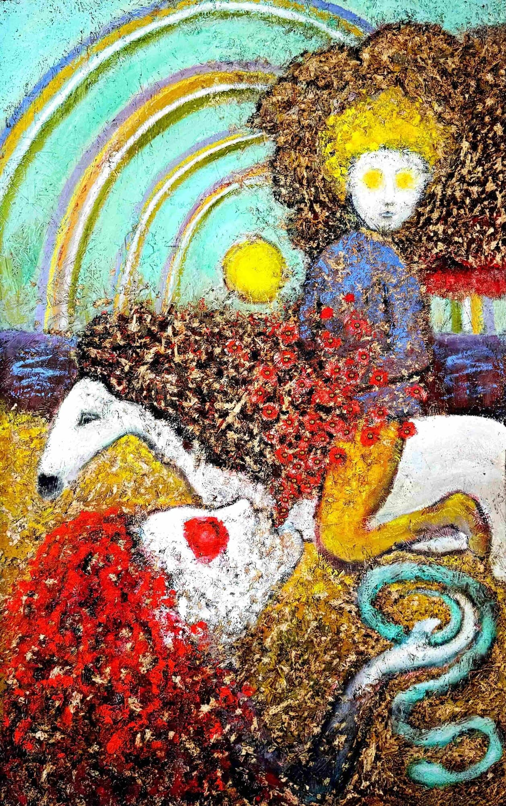

Heutzutage ist denn jeder Zweite ein Künstler.
Bin ich jeder Zweite oder gar ein besonders hochmütig „jeder Zweite“?
Oder bin ich tatsächlich außerordentlich?
Nie hat sich ein Außerordentlicher gefragt, ob er außerordentlich sei.
Oder vielleicht doch?
Sich diese Frage öffentlich zu stellen, ist eine außerordentliche Beschämung.
Warum eigentlich, wo sich doch jeder Zweite für außerordentlich hält?
Sie wollen mit der Tradition brechen, wo sie die Tradition doch nicht einmal erblicken, geschweige denn erleben können. Sie brechen nicht mit der Tradition. Sie sind so tief darin versunken, dass sie sie weder erblicken noch erleben können. Denn es ist längst schon Tradition, mit der Tradition zu brechen. Wir leben in einer sumpfigen Tradition.
